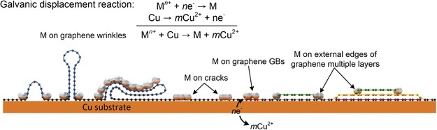

Research context and placement
The body supports Pd-selective decoration, conduction and a PET heater; deformable-routing lifetime and connection interfaces remain outside the checked evidence. Retain routing foundations.
Boundary case: assigned to the closest interface for navigation. Read the rationale and cross-links together; the primary theme does not delimit the study. Placement of foundational work does not establish direct bioelectronic application.
Research overview and key contributions
Galvanic displacement selectively decorates CVD-graphene defects with Pd nanoparticles, improving sheet resistance and transparent-heater performance.
Defect reactivity directs deposition; metal decoration is not evidence of complete carbon-lattice restoration.

Galvanic decoration at defect sites of graphene on copper.
Juree Hong, Jae-Bok Lee, Sanggeun Lee et al.. “A facile method for the selective decoration of graphene defects based on a galvanic displacement reaction”. Figure 5. DOI: 10.1038/am.2016.42. CC BY 4.0. Public original image copied byte-for-byte, with no resizing, cropping, annotations or re-encoding.
Source figure and caption ↗ · DOI: 10.1038/am.2016.42 ↗ · CC BY 4.0 ↗
Open challenges
The paper identifies difficulty distinguishing grain boundaries from wrinkles through decoration patterns alone.
Comparison context
Match Pd coverage, transmittance, reaction time, substrate and heater input power.
Related external research
Selective metal deposition at graphene line defects by atomic layer deposition
The external abstract reports ALD-selective Pt deposition at graphene line defects for hydrogen sensing, contrasting with solution-based Pd decoration.
Metal, deposition process and sensor/heater endpoints differ; this is not a performance ranking.
Abstract checkedCorresponding-author verification
Jungmok Seo: not a corresponding authorThis record concerns Jungmok Seo’s correspondence designation. Author order or an asterisk alone is not treated as confirmation; this check is separate from verification of the research content.
- Correspondence evidence source ↗
Correspondence to Taeyoon Lee or Han-Bo-Ram Lee.
Author information / author notes / corresponding authors · publisher_or_PMC_article
- Main-text review scope
- The existing commentary is based on the following review: Publisher abstract and selected deposition, resistance, heater and methods sections were read; supplements remain unchecked. Reading figure and correspondence information in this pass does not establish completion of a full in-depth article review.
- Pending verification
- Reconcile supplements and the original healing/canonical decoration title discrepancy in school Chrome. The existing commentary is based on the following review: Publisher abstract and selected deposition, resistance, heater and methods sections were read; supplements remain unchecked. Reading figure and correspondence information in this pass does not establish completion of a full in-depth article review.
COVERAGE & OUTREACH
Coverage and outreach
Links are checked for their relationship to this paper. Media publication does not establish independent reporting or additional experimental validation.
[Acceptance] “A Facile Method for Selective Decoration of Graphene Defects Based on a Galvanic Displacement Reaction” ↗
The paper title, Juree Hong, Sanggeun Lee, Jungmok Seo and NPG Asia Materials match the publication. It uses the publisher-confirmed decoration title rather than the original catalogue wording healing.
Body read Read the dated individual acceptance announcement. This is a lab announcement, not independent reporting.
Unverified candidates and access limits (1)
Unverified candidate · Transparent Heater [2/2] ↗
The search description names the decoration paper and NPG Asia Materials, making it a candidate.
Body access limited YouTube retrieval was throttled. The video, transcript, uploader and date were not verified.
Sources and verification scope
Publisher abstract and selected deposition, resistance, heater and methods sections were read; supplements remain unchecked.
- Public publication baseline ↗ · #31 · 2026-10-03
- Crossref metadata ↗: Only public bibliographic metadata registered with Crossref was checked. This does not mean that the publisher page, abstract, or full text was read; full-text verification in the school Chrome session remains pending. The titles differ after normalization and require manual review. The original title was not changed. Original selective healing and canonical selective decoration describe different scientific actions and require priority review. license_urls lists registered links and does not establish permission to redistribute text or figures. It may include TDM or posting-policy links.
- NPG Asia Materials — original article ↗
public_full_text_selected_sections · Abstract; Materials and methods; Results and Discussion: selective nucleation, coverage, wrinkles and heater; checked 2026-10-03